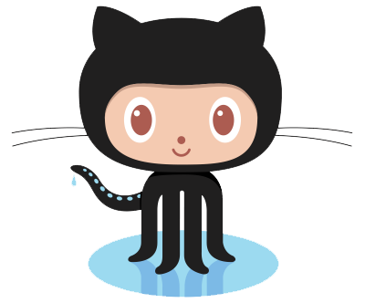
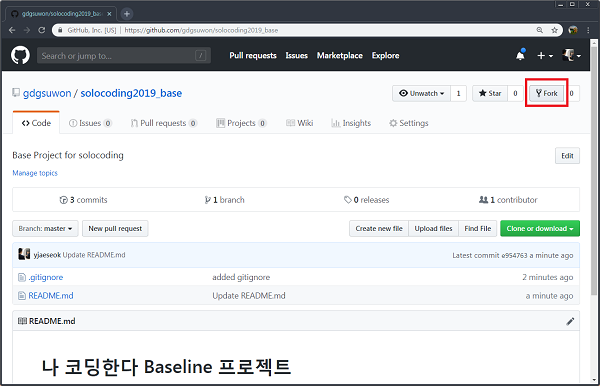

나 코딩한다 - Flutter 편
Flutter를 시작하기 위한 간편 안내서. 어렵지 않아요 ;)
Flutter를 시작하기 위한 간편 안내서. 어렵지 않아요 ;)
Git Bash 혹은 터미널을 실행합니다. (환경변수 설정필요)
사용자 이름과 이메일정보를 설정합니다.
git config --global user.name <본인 이름>
git config --global user.email <본인 이메일주소>
GitHub에 계정이 없다면 계정도 만들어야해요.

GitHub 회원가입
GitHub 계정을 준비하신 분은
https://goo.gl/SxoP4Q 에 접속하여,
GitHub 계정정보를 입력해주세요.
GDG Suwon에서 만든 Baseline 저장소를 포크해요.
(포크란? 저장소를 나의 저장소에 복사하는 것을 말해요)
먼저 아래 링크로 이동한 뒤,
https://github.com/gdgsuwon/solocoding2019_base
우측 상단의 Fork 버튼을 눌러서 자신의 프로젝트를 생성합니다.

그리고 git clone으로 소스코드를 다운로드 받습니다.
git clone https://github.com/[자신의아이디]/solocoding2019_base.git
잘 안되셨나요? 도움이 필요하다면, 카톡방으로 질문을 남겨주세요.
git이 잘 익숙하지 않다면, 아래 링크를 참고하시는 것도 좋아요.
git - 간편안내서
Flutter는 다음 장치 중 하나를 사용하여 개발할 수 있어요.
1. 컴퓨터에 연결된 개발자 모드로 설정된 물리적인 기기
2. 아이폰 OS 시뮬레이터. XCode 도구 설치가 필요합니다.
3. 안드로이드 에뮬레이터. Android Studio에서 설정해야합니다.
첫 번째 Flutter 응용 프로그램 시작하기에 따라
기본 Flutter 응용 프로그램을 만듭니다 .
프로그램은 아까 git clone 한 위치에 만들어야해요.
lib / main.dart 파일을 열고 아래와 같이 수정합니다.
import 'package:flutter/material.dart';
void main() => runApp(new MyApp());
class MyApp extends StatelessWidget {
@override
Widget build(BuildContext context) {
return new MaterialApp(
title: 'Welcome to Flutter',
home: new Scaffold(
appBar: new AppBar(
title: const Text('Welcome to Flutter'),
),
body: const Center(
child: const Text('Hello World'),
),
),
);
}
}
아래 그림처럼 실행되어야 해요.
이번에 작성한 파일을 원격 저장소에 저장해볼께요.
먼저 생성한 파일들은 아래 명령어로 (인덱스에) 추가할 수 있어요.
git add --all .
이것이 바로 git의 기본 작업 흐름에서 첫 단계에 해당돼요.
위에 추가한 내용을 확정하려면 아래 명령을 내려야 한답니다.
git commit -m "Add .gitignore file"
자, 이제 변경된 파일이 HEAD에 반영됐어요.
하지만, 원격 저장소에는 아직 반영이 안 됐답니다.
현재의 변경 내용은 아직 로컬 저장소의 HEAD 안에 머물고 있어요.
이제 이 변경 내용을 원격 서버로 올려봅시다. 아래 명령을 실행하세요.
git push origin master
짝짝짝! 드디어 원격 저장소에 오늘 작성한 파일들을 넣어보았습니다.
이처럼, 이후 작업하신 내용은 원격 저장소에 넣으시면 됩니다.